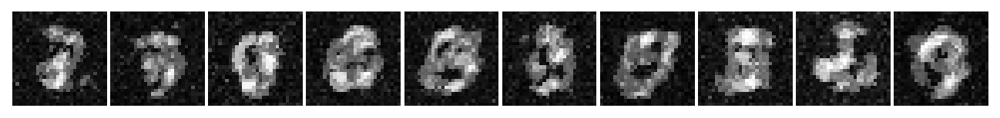
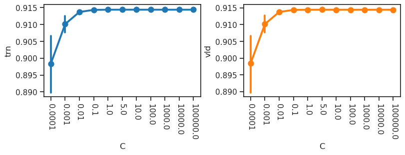

process fits, save results (PCN)#
project = iP-VAE, host = mach, device = cuda:1
Motivation:
From /mnt/sata/Dekel/pc_mnist to ../tmp/results_mar2025
Show code cell source
# HIDE CODE
import os, sys
from IPython.display import display
# tmp & extras dir
git_dir = os.path.join(os.environ['HOME'], 'Dropbox/git')
extras_dir = os.path.join(git_dir, 'jb-progress-2025/_extras')
fig_base_dir = os.path.join(git_dir, 'jb-progress-2025/figs')
tmp_dir = os.path.join(git_dir, 'jb-progress-2025/tmp')
# GitHub
sys.path.insert(0, os.path.join(git_dir, 'PoissonVAE'))
from figures.imgs import plot_weights
from figures.fighelper import *
from main.train_vae import *
# warnings, tqdm, & style
warnings.filterwarnings('ignore', category=DeprecationWarning)
warnings.filterwarnings('ignore', category=FutureWarning)
warnings.filterwarnings('ignore', category=UserWarning)
from rich.jupyter import print
%matplotlib inline
set_style()
from sklearn import linear_model
from sklearn.metrics import classification_report
device_idx = 1
device = f'cuda:{device_idx}'
print(f"device: {device} ——— host: {os.uname().nodename}")
device: cuda:1 ——— host: mach
Results dir#
results_dir = pjoin(tmp_dir, 'results_2025-03')
os.makedirs(results_dir, exist_ok=True)
len(os.listdir(results_dir))
614
MNIST data#
trn, vld, _ = make_dataset('MNIST', device)
x_vld, g_vld = vld.tensors
g_trn = trn.tensors[1]
g_trn = tonp(g_trn)
g_vld = tonp(g_vld)
x_vld = x_vld.flatten(start_dim=1)
x_vld.shape
torch.Size([10000, 784])
Fits: pc & ipc#
root = '/mnt/sata/Dekel/pc_mnist'
fits = sorted(os.listdir(root), key=alphanum_sort_key)
len(fits)
10
Process: pc & ipc#
for f in fits:
run = dict(np.load(pjoin(root, f)))
recon_vld = torch.tensor(run['x_val'], device=device)
# (1) info
str_model, seed = f.rstrip('.npz').split('_')
info = {
'dataset': 'MNIST',
'str_model': str(str_model),
'seed': int_from_str(seed),
'n_latents': 64,
'n_params': 125_968,
}
# (2) results
results = {}
# clf accuracy
lr = linear_model.LogisticRegression().fit(
X=run['z_trn'], y=g_trn)
results['clf_accuracy'] = {
'trn': classification_report(
y_true=g_trn,
y_pred=lr.predict(run['z_trn']),
output_dict=True)['accuracy'],
'vld': classification_report(
y_true=g_vld,
y_pred=lr.predict(run['z_val']),
output_dict=True)['accuracy'],
}
# r2, mse, %-zeros
results['r2'] = compute_r2(
true=x_vld,
pred=recon_vld,
).mean().item()
results['mse'] = torch.sum(
(x_vld - recon_vld) ** 2,
dim=1,
).mean(0).item()
results['%-zeros'] = (run['z_val'] == 0).mean()
# (3) info and results put together
obj_to_save = {'info': info, 'results': results}
# (4) display the fit
print(f"\n\nrun name:\t{f}")
print(obj_to_save)
# (5) save
file_name = f.replace('.npz', '.npy')
file_name = f"pcn_{file_name}"
save_obj(
obj=obj_to_save,
file_name=file_name,
save_dir=results_dir,
verbose=True,
)
print('-' * 90)
run name: ipc_seed0.npz
{ 'info': {'dataset': 'MNIST', 'str_model': 'ipc', 'seed': 0, 'n_latents': 64, 'n_params': 125968}, 'results': { 'clf_accuracy': {'trn': 0.9137333333333333, 'vld': 0.9163}, 'r2': 0.8978682160377502, 'mse': 7.121669292449951, '%-zeros': 0.0 } }
[PROGRESS] 'pcn_ipc_seed0.npy' saved at
/home/hadi/Dropbox/git/jb-progress-2025/tmp/results_2025-03
------------------------------------------------------------------------------------------
run name: ipc_seed1.npz
{ 'info': {'dataset': 'MNIST', 'str_model': 'ipc', 'seed': 1, 'n_latents': 64, 'n_params': 125968}, 'results': { 'clf_accuracy': {'trn': 0.9136166666666666, 'vld': 0.9167}, 'r2': 0.8978649973869324, 'mse': 7.121440410614014, '%-zeros': 0.0 } }
[PROGRESS] 'pcn_ipc_seed1.npy' saved at
/home/hadi/Dropbox/git/jb-progress-2025/tmp/results_2025-03
------------------------------------------------------------------------------------------
run name: ipc_seed2.npz
{ 'info': {'dataset': 'MNIST', 'str_model': 'ipc', 'seed': 2, 'n_latents': 64, 'n_params': 125968}, 'results': { 'clf_accuracy': {'trn': 0.9137666666666666, 'vld': 0.9155}, 'r2': 0.8978480100631714, 'mse': 7.122615337371826, '%-zeros': 0.0 } }
[PROGRESS] 'pcn_ipc_seed2.npy' saved at
/home/hadi/Dropbox/git/jb-progress-2025/tmp/results_2025-03
------------------------------------------------------------------------------------------
run name: ipc_seed3.npz
{ 'info': {'dataset': 'MNIST', 'str_model': 'ipc', 'seed': 3, 'n_latents': 64, 'n_params': 125968}, 'results': { 'clf_accuracy': {'trn': 0.91385, 'vld': 0.9159}, 'r2': 0.8978369832038879, 'mse': 7.123374938964844, '%-zeros': 0.0 } }
[PROGRESS] 'pcn_ipc_seed3.npy' saved at
/home/hadi/Dropbox/git/jb-progress-2025/tmp/results_2025-03
------------------------------------------------------------------------------------------
run name: ipc_seed4.npz
{ 'info': {'dataset': 'MNIST', 'str_model': 'ipc', 'seed': 4, 'n_latents': 64, 'n_params': 125968}, 'results': { 'clf_accuracy': {'trn': 0.9135833333333333, 'vld': 0.9154}, 'r2': 0.8978294730186462, 'mse': 7.122787952423096, '%-zeros': 0.0 } }
[PROGRESS] 'pcn_ipc_seed4.npy' saved at
/home/hadi/Dropbox/git/jb-progress-2025/tmp/results_2025-03
------------------------------------------------------------------------------------------
run name: pc_seed0.npz
{ 'info': {'dataset': 'MNIST', 'str_model': 'pc', 'seed': 0, 'n_latents': 64, 'n_params': 125968}, 'results': { 'clf_accuracy': {'trn': 0.9005333333333333, 'vld': 0.9068}, 'r2': 0.896251916885376, 'mse': 7.239716053009033, '%-zeros': 0.0 } }
[PROGRESS] 'pcn_pc_seed0.npy' saved at
/home/hadi/Dropbox/git/jb-progress-2025/tmp/results_2025-03
------------------------------------------------------------------------------------------
run name: pc_seed1.npz
{ 'info': {'dataset': 'MNIST', 'str_model': 'pc', 'seed': 1, 'n_latents': 64, 'n_params': 125968}, 'results': { 'clf_accuracy': {'trn': 0.9012166666666667, 'vld': 0.9075}, 'r2': 0.8963376879692078, 'mse': 7.244451522827148, '%-zeros': 0.0 } }
[PROGRESS] 'pcn_pc_seed1.npy' saved at
/home/hadi/Dropbox/git/jb-progress-2025/tmp/results_2025-03
------------------------------------------------------------------------------------------
run name: pc_seed2.npz
{ 'info': {'dataset': 'MNIST', 'str_model': 'pc', 'seed': 2, 'n_latents': 64, 'n_params': 125968}, 'results': { 'clf_accuracy': {'trn': 0.9019166666666667, 'vld': 0.9086}, 'r2': 0.8960748910903931, 'mse': 7.260417938232422, '%-zeros': 0.0 } }
[PROGRESS] 'pcn_pc_seed2.npy' saved at
/home/hadi/Dropbox/git/jb-progress-2025/tmp/results_2025-03
------------------------------------------------------------------------------------------
run name: pc_seed3.npz
{ 'info': {'dataset': 'MNIST', 'str_model': 'pc', 'seed': 3, 'n_latents': 64, 'n_params': 125968}, 'results': { 'clf_accuracy': {'trn': 0.9023666666666667, 'vld': 0.9088}, 'r2': 0.8963642120361328, 'mse': 7.241842746734619, '%-zeros': 0.0 } }
[PROGRESS] 'pcn_pc_seed3.npy' saved at
/home/hadi/Dropbox/git/jb-progress-2025/tmp/results_2025-03
------------------------------------------------------------------------------------------
run name: pc_seed4.npz
{ 'info': {'dataset': 'MNIST', 'str_model': 'pc', 'seed': 4, 'n_latents': 64, 'n_params': 125968}, 'results': { 'clf_accuracy': {'trn': 0.8972666666666667, 'vld': 0.9053}, 'r2': 0.8965579867362976, 'mse': 7.222329616546631, '%-zeros': 0.0 } }
[PROGRESS] 'pcn_pc_seed4.npy' saved at
/home/hadi/Dropbox/git/jb-progress-2025/tmp/results_2025-03
------------------------------------------------------------------------------------------
Fits: dcpc#
root = '/mnt/sata/Dekel/dcpc_mnist'
fits = sorted(os.listdir(root), key=alphanum_sort_key)
len(fits)
5
print(fits)
['seed0.npz', 'seed1.npz', 'seed2.npz', 'seed3.npz', 'seed4.npz']
run = dict(np.load(pjoin(root, fits[0])))
print({k: v.shape for k, v in run.items()})
{ 'x_trn_hat': (54000, 1, 28, 28), 'z_trn_hat': (54000, 20), 'x_val_hat': (6000, 1, 28, 28), 'z_val_hat': (6000, 20), 'x_tst_hat': (10000, 1, 28, 28), 'z_tst_hat': (10000, 20) }
Process: dcpc#
for f in fits:
run = dict(np.load(pjoin(root, f)))
run = {k: v.reshape(len(v), -1) for k, v in run.items()}
recon_vld = torch.tensor(run['x_tst_hat'], device=device)
# (1) info
info = {
'dataset': 'MNIST',
'str_model': 'dcpc',
'seed': int_from_str(f.rstrip('.npz')),
'n_latents': 20,
'n_params': 319_000,
}
# (2) results
results = {}
# clf accuracy
z_trn = np.concatenate([
run['z_trn_hat'],
run['z_val_hat'],
])
lr = linear_model.LogisticRegression().fit(
X=z_trn, y=g_trn)
results['clf_accuracy'] = {
'trn': classification_report(
y_true=g_trn,
y_pred=lr.predict(z_trn),
output_dict=True)['accuracy'],
'vld': classification_report(
y_true=g_vld,
y_pred=lr.predict(run['z_tst_hat']),
output_dict=True)['accuracy'],
}
# r2, mse, %-zeros
results['r2'] = compute_r2(
true=x_vld,
pred=recon_vld,
).mean().item()
results['mse'] = torch.sum(
(x_vld - recon_vld) ** 2,
dim=1,
).mean(0).item()
results['%-zeros'] = (run['z_tst_hat'] == 0).mean()
# (3) info and results put together
obj_to_save = {'info': info, 'results': results}
# (4) display the fit
print(f"\n\nrun name:\t{f}")
print(obj_to_save)
# (5) save
file_name = f.replace('.npz', '.npy')
file_name = f"pcn_dcpc_{file_name}"
# save_obj(
# obj=obj_to_save,
# file_name=file_name,
# save_dir=results_dir,
# verbose=True,
# )
print('-' * 90)
run name: seed0.npz
{ 'info': {'dataset': 'MNIST', 'str_model': 'dcpc', 'seed': 0, 'n_latents': 20, 'n_params': 319000}, 'results': { 'clf_accuracy': {'trn': 0.11433333333333333, 'vld': 0.1157}, 'r2': 0.09263421595096588, 'mse': 64.8829574584961, '%-zeros': 0.0 } }
------------------------------------------------------------------------------------------
run name: seed1.npz
{ 'info': {'dataset': 'MNIST', 'str_model': 'dcpc', 'seed': 1, 'n_latents': 20, 'n_params': 319000}, 'results': { 'clf_accuracy': {'trn': 0.11431666666666666, 'vld': 0.1157}, 'r2': 0.08894339203834534, 'mse': 65.07510375976562, '%-zeros': 0.0 } }
------------------------------------------------------------------------------------------
run name: seed2.npz
{ 'info': {'dataset': 'MNIST', 'str_model': 'dcpc', 'seed': 2, 'n_latents': 20, 'n_params': 319000}, 'results': { 'clf_accuracy': {'trn': 0.1142, 'vld': 0.1158}, 'r2': 0.09175795316696167, 'mse': 64.90404510498047, '%-zeros': 0.0 } }
------------------------------------------------------------------------------------------
run name: seed3.npz
{ 'info': {'dataset': 'MNIST', 'str_model': 'dcpc', 'seed': 3, 'n_latents': 20, 'n_params': 319000}, 'results': { 'clf_accuracy': {'trn': 0.11453333333333333, 'vld': 0.116}, 'r2': 0.09057500958442688, 'mse': 65.00411224365234, '%-zeros': 0.0 } }
------------------------------------------------------------------------------------------
run name: seed4.npz
{ 'info': {'dataset': 'MNIST', 'str_model': 'dcpc', 'seed': 4, 'n_latents': 20, 'n_params': 319000}, 'results': { 'clf_accuracy': {'trn': 0.11413333333333334, 'vld': 0.1157}, 'r2': 0.09319479018449783, 'mse': 64.82550048828125, '%-zeros': 0.0 } }
------------------------------------------------------------------------------------------
recon_vld.shape
torch.Size([10000, 784])
compute_r2(
true=x_vld,
pred=recon_vld,
).mean().item()
recon_vld = torch.tensor(run['x_tst_hat'], device=device)
plot_weights(recon_vld[:10].reshape(-1, 28, 28), nrows=1);

Accu dependence on C#
accu = collections.defaultdict(list)
for f in tqdm(fits):
run = dict(np.load(pjoin(root, f)))
for C in [1e-4, 1e-3, 1e-2, 1e-1, 1, 5, 10, 100, 1e3, 1e4, 1e5]:
lr = linear_model.LogisticRegression(C=C, max_iter=5000).fit(
X=run['z_trn'], y=g_trn)
clf_accuracy = {
'trn': classification_report(
y_true=g_trn,
y_pred=lr.predict(run['z_trn']),
output_dict=True)['accuracy'],
'vld': classification_report(
y_true=g_vld,
y_pred=lr.predict(run['z_val']),
output_dict=True)['accuracy'],
}
accu['fit'].append(f)
accu['C'].append(C)
accu['trn'].append(clf_accuracy['trn'])
accu['vld'].append(clf_accuracy['trn'])
accu = pd.DataFrame(accu)
100%|███████████████████████████████████████████| 10/10 [08:56<00:00, 53.70s/it]
fig, axes = create_figure(1, 2, (8, 3))
sns.pointplot(data=accu, x='C', y='trn', ax=axes[0])
sns.pointplot(data=accu, x='C', y='vld', color='C1', ax=axes[1])
for ax in axes.flat:
ax.tick_params(axis='x', rotation=-90)
plt.show()

New 512 fits#
root = '/mnt/sata/Dekel/pc_mnist_512'
fits = sorted(os.listdir(root), key=alphanum_sort_key)
len(fits)
2
for f in fits:
run = dict(np.load(pjoin(root, f)))
recon_vld = torch.tensor(run['x_val'], device=device)
# (1) info
str_model, seed = f.rstrip('.npz').split('_')
info = {
'dataset': 'MNIST',
'str_model': str(str_model),
'seed': int_from_str(seed),
'n_latents': 512,
'n_params': 927_504,
}
# (2) results
results = {}
# clf accuracy
lr = linear_model.LogisticRegression().fit(
X=run['z_trn'], y=g_trn)
results['clf_accuracy'] = {
'trn': classification_report(
y_true=g_trn,
y_pred=lr.predict(run['z_trn']),
output_dict=True)['accuracy'],
'vld': classification_report(
y_true=g_vld,
y_pred=lr.predict(run['z_val']),
output_dict=True)['accuracy'],
}
# r2, mse, %-zeros
results['r2'] = compute_r2(
true=x_vld,
pred=recon_vld,
).mean().item()
results['mse'] = torch.sum(
(x_vld - recon_vld) ** 2,
dim=1,
).mean(0).item()
results['%-zeros'] = (run['z_trn'] == 0).mean()
# (3) info and results put together
obj_to_save = {'info': info, 'results': results}
# (4) display the fit
print(f"\n\nrun name:\t{f}")
print(obj_to_save)
run name: ipc_seed0.npz
{ 'info': {'dataset': 'MNIST', 'str_model': 'ipc', 'seed': 0, 'n_latents': 512, 'n_params': 927504}, 'results': { 'clf_accuracy': {'trn': 0.9298666666666666, 'vld': 0.9238}, 'r2': 0.9995386600494385, 'mse': 0.03296268731355667, '%-zeros': 0.0 } }
run name: pc_seed0.npz
{ 'info': {'dataset': 'MNIST', 'str_model': 'pc', 'seed': 0, 'n_latents': 512, 'n_params': 927504}, 'results': { 'clf_accuracy': {'trn': 0.9027166666666666, 'vld': 0.9053}, 'r2': 0.9995481371879578, 'mse': 0.03220434486865997, '%-zeros': 0.0 } }